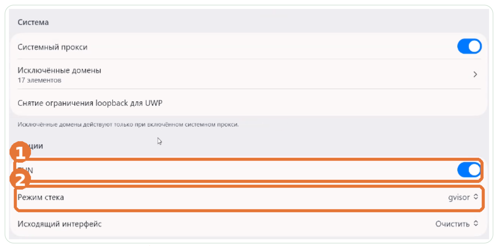
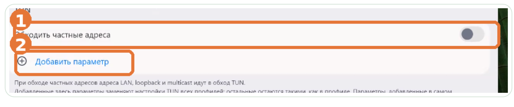
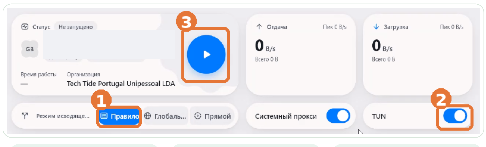

01
Google Chrome
✓
Установить Google Chrome
Если Chrome уже установлен, отметьте пункт и идите дальше.
google.com/chrome — скачать браузер ↗✓
Сделать Chrome браузером по умолчанию
macOS: Системные настройки → Рабочий стол и Dock → «Веб-браузер по умолчанию» → Google Chrome.
Windows: Параметры → Приложения → Приложения по умолчанию → Google Chrome → «Использовать по умолчанию».
Windows: Параметры → Приложения → Приложения по умолчанию → Google Chrome → «Использовать по умолчанию».
✓
Создать отдельный профиль для интенсива
Нажмите кружок профиля в правом верхнем углу Chrome → «Добавить» → введите имя → «Готово».
02
Sirius VPN + Happ
💡Это основной VPN для учёбы. Telegram-бот Sirius VPN выдаёт подписку, а приложение Happ подключает к ней устройство. Открытие бота само по себе VPN не включает.
✓
Открыть @siriusvpnbot и оформить доступ
- Нажмите «Запустить» / Start.
- Откройте тарифы и оплатите подходящий доступ внутри официального бота.
- Найдите раздел «Настроить VPN».
✓
Установить Happ на своё устройство
В боте откройте «Настроить VPN» → «Установить Happ» → выберите iOS/iPadOS, macOS или Windows. Устанавливайте приложение только по ссылке из бота.
Если настраиваете компьютер через телефон: отправьте себе ссылку на скачивание через «Избранное», почту или другой доступный мессенджер, затем откройте её на компьютере.
Если настраиваете компьютер через телефон: отправьте себе ссылку на скачивание через «Избранное», почту или другой доступный мессенджер, затем откройте её на компьютере.
✓
Импортировать конфигурацию MAIN в Happ
- Вернитесь в @siriusvpnbot.
- Откройте «Настроить VPN» или «Моя подписка» → «Мои конфигурации VPN».
- Скопируйте ссылку конфигурации MAIN.
- В Happ нажмите «+» → «Добавить подписку» → «Импорт из буфера обмена».
- Дождитесь списка серверов и выберите доступный сервер.
✓
Включить VPN и разрешить системное подключение
Нажмите подключение в Happ. Когда iOS, macOS или Windows запросят разрешение на VPN-конфигурацию, подтвердите его. На Mac может понадобиться пароль или Touch ID.
✓
Проверить, что IP изменился
Откройте ipinfo.io до подключения и после него. IP должен измениться, а страна должна совпадать с выбранным сервером. Затем откройте нужный зарубежный сайт.
На каждом новом устройстве Happ и MAIN настраиваются отдельно.
ipinfo.io — проверить IP ↗На каждом новом устройстве Happ и MAIN настраиваются отдельно.
🔑Не публикуйте ссылку MAIN. В ней могут быть ваши параметры доступа. Если Happ не показывает серверы, обновите подписку или импортируйте MAIN заново. Поддержка: @SiriusVPNhelpbot. Названия кнопок могут немного отличаться после обновлений.
03
Виртуальная карта Заруба
💳Основной вариант: @zarub_robot. Карта с биллинг-адресом США нужна для ChatGPT и самостоятельного продления Claude. Баланс пополняется через СБП или криптовалютой.
✓
Уточнить условия перед выпуском
Напишите в @zarub_help_bot:
- Какой у карты биллинг-адрес и страна.
- Проходят ли сейчас оплаты Claude и ChatGPT.
- Какие комиссии за выпуск, пополнение и операции.
✓
Выпустить карту и сохранить реквизиты
- Откройте @zarub_robot → «Запустить».
- Пополните баланс и выпустите виртуальную карту с биллингом США.
- Сохраните номер, срок действия, CVV и биллинг-адрес в менеджере паролей.
💰Пополняйте карту с запасом около 10% на комиссии. Отдельно учтите Claude Max ($100/мес) или стоимость готового комплекта, а также ChatGPT Plus ($20/мес) или Pro (от $100/мес). Точную стоимость комплекта и состав услуги подтвердите до оплаты.
04
Получить готовый Claude с KYC
🧠Проверенный человек выдаст готовый доступ к Claude с KYC и комплект для подключения через специальную программу FlClash. Она помогает использовать Claude в России без блокировок.
✓
Написать специалисту: @Claude5x20x
Скопируйте сообщение ниже и отправьте его в Telegram. До ответа не оплачивайте комплект и не передавайте лишние личные данные.
Открыть чат со специалистом ↗Привет! Я с интенсива «ИИ-ВИЗАЦИЯ» по связкам. Хочу получить готовый аккаунт Claude с подпиской Max за $100. Мне нужен верифицированный аккаунт с KYC. Подскажи, пожалуйста, когда будет готов доступ, что требуется от меня для начала и как пошагово проходит оплата. Пришли, пожалуйста, доступ к специальной почте и комплект для FlClash: ZIP с YAML для моей ОС, контрольный IP и название рабочего узла. Моя система: Windows 10/11 или macOS. Процессор: Intel/AMD x64, Windows ARM64, Apple Silicon (M1/M2/M3/M4 и новее) или Intel.
💻Перед отправкой оставьте в последних двух строках только свою конфигурацию.
Windows: откройте «Параметры» → «Система» → «О системе». Для большинства Intel/AMD нужна версия x64; ARM64 выбирайте только для ARM-компьютера.
macOS: откройте → «Об этом Mac». Для M1/M2/M3/M4 и новее укажите Apple Silicon, для процессора Intel укажите Intel.
Windows: откройте «Параметры» → «Система» → «О системе». Для большинства Intel/AMD нужна версия x64; ARM64 выбирайте только для ARM-компьютера.
macOS: откройте → «Об этом Mac». Для M1/M2/M3/M4 и новее укажите Apple Silicon, для процессора Intel укажите Intel.
✓
Проверить, что получили весь комплект
- Доступ к Claude с KYC и данные для входа.
- Логин и пароль от специальной почты, к которой привязан аккаунт.
- ZIP с отдельными YAML для Windows и macOS.
- Контрольный IP и название рабочего прокси-узла.
- Контакт для поддержки и порядок продления.
✓
Уточнить KYC, срок прокси и продление
Проверьте, что проверка личности пройдена до передачи аккаунта. Уточните у специалиста, что делать при повторном запросе Persona, на какой срок выдан прокси и как продлевается Claude. Не считайте доступ бессрочным, пока условия не подтверждены.
05
Настроить специальную программу FlClash
🧩FlClash — специальная программа, которая помогает использовать Claude в России без блокировок. Работает с комплектом, который присылает проверенный человек.
⚠️Используйте только ZIP и YAML из полученного комплекта. Не создавайте профиль с нуля и не меняйте правила внутри файла. Перед запуском FlClash отключите Happ и другие VPN: два сетевых туннеля одновременно могут конфликтовать.
✓
Скачать FlClash 0.9.2 для своей системы
Windows: для большинства Intel/AMD нужна x64, для ARM-компьютера — ARM64.
macOS: откройте → «Об этом Mac». Для M1/M2/M3/M4 и новее выбирайте Apple Silicon, для Intel — Intel.
Официальный GitHub Releases ↗macOS: откройте → «Об этом Mac». Для M1/M2/M3/M4 и новее выбирайте Apple Silicon, для Intel — Intel.
📦 Прямые ссылки на установщики
Windows x64 — EXE
Windows ARM64 — EXE
macOS Apple Silicon — DMG
macOS Intel — DMG
Windows: откройте EXE и разрешите установку.
macOS: откройте DMG, перетащите FlClash в «Программы» и запустите. Разрешите Helper или сетевой компонент, если система попросит.
✓
Распаковать ZIP и импортировать YAML
- Windows: правая кнопка по ZIP → «Извлечь всё». macOS: дважды нажмите ZIP.
- В FlClash откройте «Профили» → «+» → «Файл».
- Windows: выберите FlClash-RU-Direct-Windows.yaml.
- macOS: выберите FlClash-RU-Direct-macOS.yaml.
- Нажмите карточку нового профиля, чтобы сделать его активным.

Раздел «Профили». Нажмите изображение для увеличения.
✓
Открыть сетевые настройки
Путь: «Инструменты» → «Расширенная конфигурация» → «Сеть». Включите «Системный прокси». На macOS названия разделов аналогичны, внешний вид может отличаться.


✓
Включить TUN и выбрать gvisor
В «Инструменты» → «Расширенная конфигурация» → «Сеть» прокрутите до «Опции»:
- TUN: ВКЛ.
- Режим стека: gvisor.
- Системный прокси: ВКЛ.
- Исходящий интерфейс: не менять.

✓
Добавить MTU = 1400 и проверить маршруты
- В блоке TUN нажмите «+ Добавить параметр» → «MTU».
- Введите 1400 и сохраните.
- «Обходить частные адреса»: ВЫКЛ.
- «Строгая маршрутизация» / Strict route на Windows: ВКЛ.
- «Автонастройка системного DNS» на macOS: ВКЛ. Маршруты и исключения оставьте пустыми.

✓
Проверить ядро, DNS и правила
- «Общие» → «Ядро»: IPv6 ВКЛ, «Добавлять системный DNS» ВЫКЛ, «Разрешить LAN» ВЫКЛ.
- В разделах DNS и «Сниффер» список переопределяемых параметров должен быть пустым.
- Существующие правила внутри YAML сохраните, свои не добавляйте.
- Chrome: «Настройки» → «Конфиденциальность и безопасность» → «Безопасность» → «Использовать безопасный DNS» → ВЫКЛ. Если переключателя нет, пропустите.
✓
Запустить подключение в режиме «Правило»
Вернитесь на «Панель» и проверьте три вещи: режим «Правило» → TUN ВКЛ → синяя кнопка ▶. «Системный прокси» тоже оставьте включённым. Если узел не выбран автоматически, откройте «Прокси» и выберите рабочий узел из сообщения специалиста.
Не выбирайте «Глобально»: режим «Правило» оставляет российские сайты из YAML напрямую.
Не выбирайте «Глобально»: режим «Правило» оставляет российские сайты из YAML напрямую.

✓
Проверить IP и маршруты сайтов
- Перезапустите браузер и откройте api.ipify.org.
- Сравните IP с контрольным адресом из сообщения специалиста.
- Во FlClash откройте «Активные соединения» и выключите фильтр «Только прокси».
- Откройте сайты заново: claude.ai и api.ipify.org должны идти через PROXY, vk.com и yandex.ru через DIRECT.
🔌Во время работы с Claude держите FlClash запущенным, а TUN включённым. Если закрыть приложение или остановить TUN, часть трафика может пойти напрямую. Если TUN не запускается, проверьте права администратора/Helper и отключите второй VPN. Если проблема осталась, отправьте специалисту скриншот без YAML и параметров доступа.
06
Войти в Claude и проверить Max
🧭Специальную почту, ссылки для входа и Claude открывайте только в отдельном профиле Chrome из шага 01. Перед этим включите FlClash. Не открывайте доступы в своём обычном профиле браузера.
✓
Войти в выданный аккаунт
- Включите FlClash по шагу 05.
- В отдельном профиле Chrome откройте специальную почту по данным из комплекта.
- В этом же профиле откройте claude.ai и используйте выданные данные для входа.
- Если Claude прислал ссылку для входа на специальную почту, скопируйте адрес ссылки, вставьте его в адресную строку отдельного профиля Chrome и нажмите Enter.
✓
Проверить подписку и отправить тестовое сообщение
Откройте «Settings» → «Billing»: должен быть активен Max. Затем отправьте сообщение «Привет! Расскажи о себе» и дождитесь ответа.
Если Max не отображается или аккаунт просит оплату, не привязывайте карту сразу: сначала уточните у специалиста, что входит в комплект.
Если Max не отображается или аккаунт просит оплату, не привязывайте карту сразу: сначала уточните у специалиста, что входит в комплект.
✓
Проверить, нет ли повторного запроса верификации
Если появился экран Persona или ограничение аккаунта, напишите специалисту и уточните порядок действий. Для собственного аккаунта проходите только официальную проверку Anthropic и используйте собственный физический документ. Скан, копия или фото документа с экрана не подходят.
📵Из России не заходите в Claude с телефона. Работайте с компьютера при включённом FlClash. Не меняйте без необходимости страну, прокси, карту и не создавайте несколько аккаунтов. Сначала включайте FlClash, потом открывайте Claude; перед отключением закройте вкладки и приложение Claude.
07
Регистрация ChatGPT и Codex
🤖ChatGPT нужен для второго ИИ-контура и работы с Codex. Если не хотите получать Claude через специалиста, используйте Codex как альтернативу: Sirius VPN, карта Заруба и аккаунт ChatGPT остаются теми же.
✓
Зарегистрироваться или войти в ChatGPT
- Для самостоятельного входа включите Sirius/Happ. Если уже работаете через FlClash, не включайте Happ поверх него.
- В отдельном профиле Chrome откройте chatgpt.com.
- Войдите с помощью своей почты или создайте аккаунт.
📱 Только если попросили SMS-код
Номер нужен не всем. Если запрос появился, выберите один сервис и страну США. Для ChatGPT указывайте сервис OpenAI / ChatGPT.
hero-sms: hero-sms.com — разовый номер.
5sim: 5sim.net — разовый номер, выбирайте точный сервис.
mobilesms.io: mobilesms.io — аренда Physical / Non-VoIP номера США на месяц.
Код придёт в личный кабинет выбранного сервиса. Разовый номер не используйте повторно для другого аккаунта.
✓
Оформить ChatGPT Plus или Pro
- Откройте «Settings» → «Subscription» → «Upgrade».
- Выберите Plus за $20/мес для старта или Pro от $100/мес. Актуальные уровни Pro смотрите на официальной странице тарифов.
- Введите реквизиты и биллинг-адрес карты из шага 03.
- Проверьте, что в «Settings» → «Subscription» отображается выбранный тариф.
✓
Проверить доступ к Codex тем же аккаунтом
Войдите в Codex с аккаунтом ChatGPT, на котором активна подписка. Если вход или тариф не открываются, напишите в учебный чат и приложите скриншот без личных данных.
08
Продление Claude после первого месяца
🔁Есть два варианта. Выберите один до даты следующего списания. Не меняйте карту без необходимости: для аккаунта от специалиста сначала уточните у него, как безопасно перейти на собственную оплату.
✓
Выбрать один способ продления
Вариант 1: платить самому картой Заруба. Подходит, если хотите контролировать оплату сами. Уточните у специалиста порядок смены способа оплаты, затем в Claude откройте «Settings» → «Billing» и добавьте карту из шага 03. Держите запас на подписку и комиссии, проверьте автопродление.
Вариант 2: продолжать оплату через специалиста. Заранее договоритесь о сумме, дате и способе перевода. Этот вариант оставляет оплату на его стороне, но вы зависите от сроков его ответа. До подтверждения не считайте продление выполненным.
Вариант 2: продолжать оплату через специалиста. Заранее договоритесь о сумме, дате и способе перевода. Этот вариант оставляет оплату на его стороне, но вы зависите от сроков его ответа. До подтверждения не считайте продление выполненным.
🗓Раз в пару недель проверьте VPN, прокси, баланс карты и дату продления. Пароли храните в менеджере паролей. Доступы, YAML и ссылку MAIN не отправляйте в общие чаты.